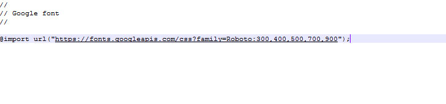

FAQS
How to Change Font Style ?
Step 1:
Go To _fonts.scss (assets/scss/custom/fonts/_fonts.scss )
if you want to change another font-family Go to the site Google Fonts And Slect One font Family and import In to style.css file
How to Select font Family
Example:

Step 2:
And paste Your Selected font-family in _fonts.scss
Example:
@import url("https://fonts.googleapis.com/css?family=Roboto:300,400,500,700,900");
Step 3:
And add the Your Selected font-family in _bootstrap-styles.scss(assets/scss/bootstrap/_bootstrap-styles.scss)
Example:
body {
margin: 0;
font-family: "Roboto", sans-serif;
font-size: 14px;
font-weight: 400;
line-height: 1.5;
color: $default-color;
text-align: left;
background-color: $background;
}
How to Change Logo ?
Go To "assets/images/brand" folder and replace your logo with Previous Logos within in image size. note: Please don't increase logo sizes. Replace your logo within given image size. otherwise the logo will not fit in particular place it disturbs the template design.
How to Enable Darktheme?
open custom.js file go to SWITCHER-toggle and remove comments for data-theme to enable data-theme style as shown in below
/*Theme Layouts*/
//$('body').addClass('data-theme');
data-theme as shown below
/*Theme Layouts*/
$('body').addClass('data-theme');
How to Enable Leftmenu color?
open custom.js file go to Header Styles. and remove comments for leftmenu-color to enable leftmenu-color style as shown in below
/* ############# Leftmenu version ########*/
//$('body').addClass('leftmenu-color')
leftmenu-color as shown below
/* ############# Leftmenu version ########*/
$('body').addClass('leftmenu-color')
How to Enable Leftmenu Dark?
open custom.js file go to Header Styles. and remove comments for leftmenu-dark to enable leftmenu-dark style as shown in below
/* ############# Leftmenu version ########*/
//$('body').addClass('leftmenu-dark');
leftmenu-dark as shown below
/* ############# Leftmenu version ########*/
$('body').addClass('leftmenu-dark');
How to Enable Leftmenu Light?
open custom.js file go to Header Styles. and remove comments for leftmenu-light to enable leftmenu-light style as shown in below
/* ############# Leftmenu version ########*/
//$('body').addClass('leftmenu-light');
leftmenu-light as shown below
/* ############# Leftmenu version ########*/
$('body').addClass('leftmenu-light');
How to Enable Leftmenu gradient?
open custom.js file go to Header Styles. and remove comments for leftmenu-gradient to enable leftmenu-gradient style as shown in below
/* ############# Leftmenu version ########*/
//$('body').addClass('leftmenu-gradient');
leftmenu-gradient as shown below
/* ############# Leftmenu version ########*/
$('body').addClass('leftmenu-gradient');
How to Change Leftmenu background images ?
leftbgimage1 to enable leftbgimage1 style as shown in below (follow the same for remaining images)
/* ########### backgroundimage-1 ###########*/
// $('body').addClass(' leftbgimage1'); //
leftbgimage1 as shown below
/* ########### backgroundimage-1 ##/
$('body').addClass(' leftbgimage1');
How to Enable Horizontal Light?
open custom.js file go to Horizontal-menu Styles. and remove comments for horizontal-light to enable horizontal-light style as shown in below
/* ############# Horizontal version ########*/
//$('body').addClass('horizontal-light');
horizontal-light as shown below
/* ############# Horizontal version ########*/
$('body').addClass('horizontal-light');
How to Enable Horizontal color?
open custom.js file go to Horizontal-menu Styles. and remove comments for horizontal-color to enable horizontal-color style as shown in below
/* ############# Horizontal version ########*/
//$('body').addClass('horizontal-color');
horizontal-color as shown below
/* ############# Horizontal version ########*/
$('body').addClass('horizontal-color');
How to Enable Horizontal dark?
open custom.js file go to Horizontal-menu Styles. and remove comments for horizontal-dark to enable horizontal-dark style as shown in below
/* ############# Horizontal version ########*/
//$('body').addClass('horizontal-dark');
horizontal-dark as shown below
/* ############# Horizontal version ########*/
$('body').addClass('horizontal-dark');
How to Enable Horizontal gradient?
open custom.js file go to Horizontal-menu Styles. and remove comments for horizontal-gradient to enable horizontal-gradient style as shown in below
/* ############# Horizontal version ########*/
//$('body').addClass('horizontal-gradient');
horizontal-gradient as shown below
/* ############# Horizontal version ########*/
$('body').addClass('horizontal-gradient');
How to Enable Boxed Layout?
open custom.jsfile go to Layout-width Styles. and remove comments for width styles to enable boxed style as shown in below
/*-- width styles ---*/
// $('body').addClass('boxed'); //
boxed as shown below
/*-- width styles ---*/
$('body').addClass('boxed');
How to Enable Body Style1?
open custom.jsfile go to Skin modes Styles. and remove comments for body-style1 to enable Boxed style1 as shown in below
/* ############# Skin modes ########*/
// $('body').addClass('body-style1');//
Body Style1 as shown below
/* ############# Skin modes ########*/
$('body').addClass('body-style1');
How to Enable Closed Leftmenu in both LTR and RTL versions?
Step 1:
Open all HTML files in Header section you have to change the sidemenu.css to closed-sidemenu.css style link. As shown in below Image.

Step 2:
Enable closed-sidemenu:

How to Enable Hover Submenu in both LTR and RTL versions?
Step 1:
Open all HTML files in Header section you have to change the sidemenu.css to sidemenu3.css style link. As shown in below Image.
Step 2:
Enable Hover-Submenu:

Step 3:
Open all HTML files in scripts you have to change the sidemenu.js to sidemenu1.js script link. As shown in below Image.

Step 4:
Enable Hover-Submenu:

How to Enable Icon Overlay in both LTR and RTL versions?
Step 1:
Open all HTML files in scripts you have to change the sidemenu.js to sidemenu1.js script link. As shown in below Image.
Step 2:
Enable Sidemenu-Iconoverlay:
How to Enable Icon Text in both LTR and RTL versions?
Step 1:
Open all HTML files in Header section you have to change the sidemenu.css to sidemenu1.css style link. As shown in below Image.
Step 2:
Enable Sidemenu-Icontext:

Step 3:
Open all HTML files in scripts you have to change the sidemenu.js to sidemenu2.js script link. As shown in below Image.
Step 4:
Enable Sidemenu-Icontext:

How to Enable Horizontalmenu Centerlogo in both LTR and RTL versions?
Step 1:
Open all HTML files in body section you have to add centerlogo-horizontal class. As shown in below Image.

Step 2:
Enable Centerlogo-horizontal: